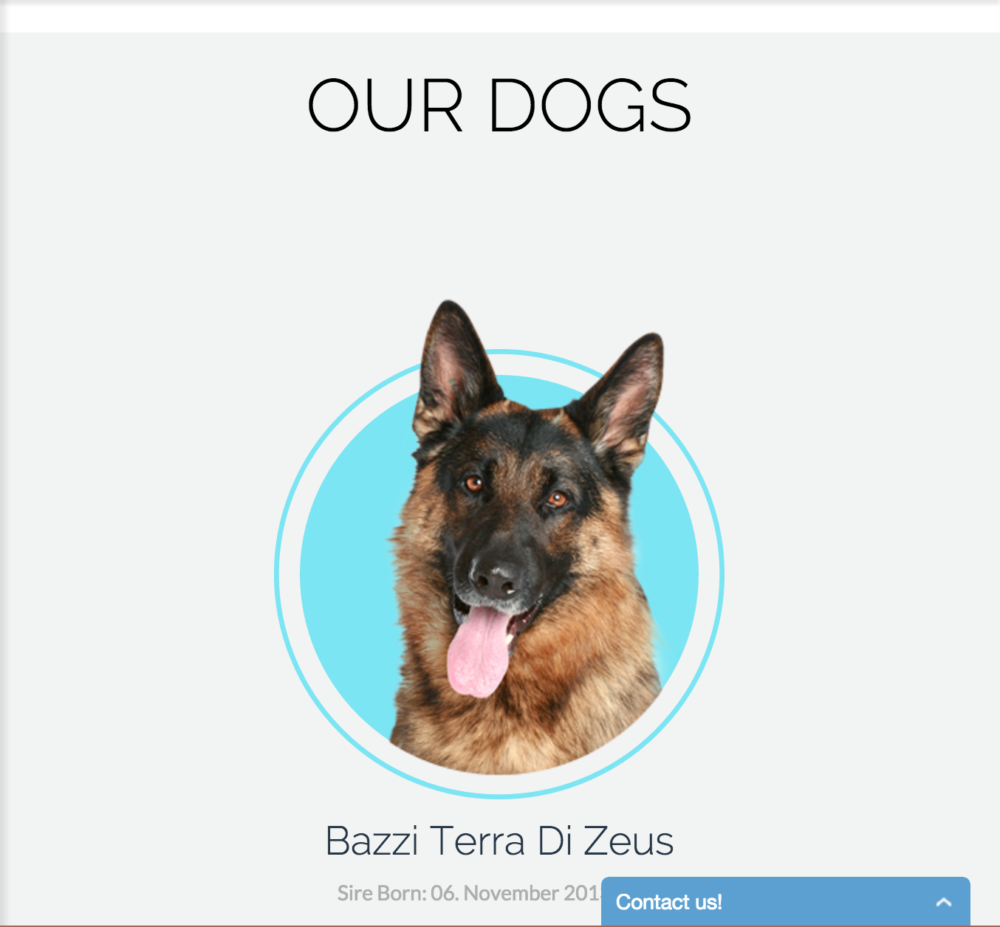
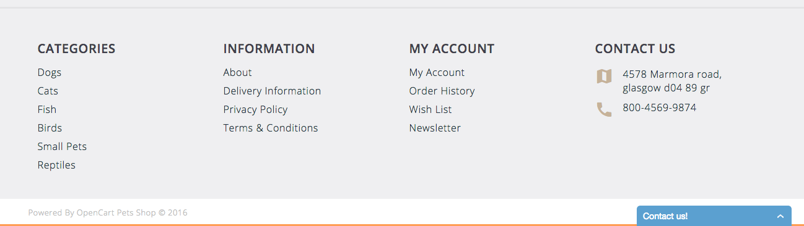

Component Library

Drop-Down Menu Header
What I hope to practice/learn?
A header is a crucial element to a website. Getting it to sit on the page and function properly is even more crucial.
How this relates to what I have/will learn.
Having a header tool bar with drop-down elements makes a website even more useful by providing more links for the user to click
and allow them to get more specific with what they are looking for without having to use a search bar.
How might I build this?
-
Create the component as a header tag
-
Company branding established using image tag or heading 1 tag
-
Navigation using the nav tag containing an unordered list tag with four list item tags for children each containing an anchor tag.
-
Dropdown menu items will be nested using unordered list item tags inside corresponding list item tags.
Search Box
What I hope to practice/learn?
I want to figure out how actually get a search box to work. The few times I've used it, I had a terrible time trying to figure it out and it never actually worked.
How this relates to what I have/will learn.
The search box will help me with functions and learning how to get the find function to work based on what the user types in. As well as creating libraries of searches to aid the user in finding what they need.

Responsive Features List
What I hope to practice/learn?
I hope to learn how to get responsiveness to work properly when sizing down windows and to get all the elements to behave when I do so. Like when it takes a horizontal list of elements and converts them to a vertical list for smaller windows.
How this relates to what I have/will learn.
This feature will aid the user in using my site on any platform and device. As well as just resizing it on a larger screen so as to fit multiple windows on the screen.

Testimonial Pagination
What I hope to practice/learn?
Using this kind of element to allow a user to cycle through several pieces of content within in the same amount of space on the page
will allow the user to save time in what they are looking for. It also saves a lot of room on the page, allowing
the developer to add more elements. This technique uses mainly css and javascript and images of course to keep
everything looking interesting and different.
How this relates to what I have/will learn.
THe main benefit of this element is saving space and giving the user something new and interesting to use and look at.
It also gives me a chance to learn more about using the element. It can be used in so many different ways.

Footer
What I hope to practice/learn?
I'll get to learn how to import social media buttons possibly using JSON and JQUERY. As well as organizing
the footer to look professional and clean.
How this relates to what I have/will learn.
A footer is always required. But how it is used can vary on the developer's needs. This footer will have
contact info for the business, some social media buttons, and some quick links for the user to get back to
where they want to be.